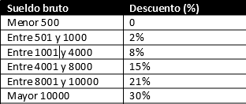

ID:
Horas trabajadas:
Tarifa por hora trabajada:
Hello Kevin, tu id es: {{id}} !
Tu salario bruto es de: {{bruto1()}} soles
El descuento que te corresponde es de: {{descuento()}}
Tu salario neto es de: {{bruto1()-descuento()}}